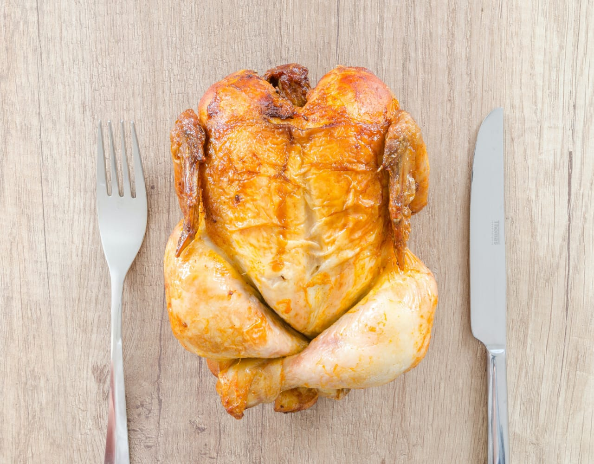

Crispy Chicken Broast Recipe - Crispy Chicken broast is a healthy delicious meal full of nutritious value of healthy chicken. It is loved by children and adults equally. Marinated with delicious paprika, salt, mustard powder, egg, Chinese salt, milk, all purpose flour and lemon juice, this Crispy Chicken broast is truly a delight on dining table. Crispy Chicken Broast allows you to taste the crisp of spicy chicken. Treat your family and friends from yummy Chicken Broast. Served it with buns, French fries, Tomato ketchup and spiced yogurt (raita). You can serve it as a lunch or dinner meal. Get the easy to make Crispy Chicken Broast recipe from HamariWeb.